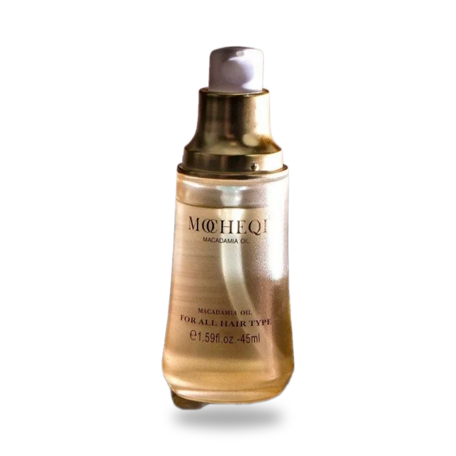

Коктейль масел: жожоба и макадамия
MOCHEQI MUSK, масло
Кому: Неповторимый и дорогой аромат
Почему это работает
. Идеален для секущихся кончиков. Защищает от ультрафиолета. Придаёт блеск.
Как пользоваться. Две-три капли на сухие или влажные концы, распределить руками. Не смывать.
1 350 ₽45 мл